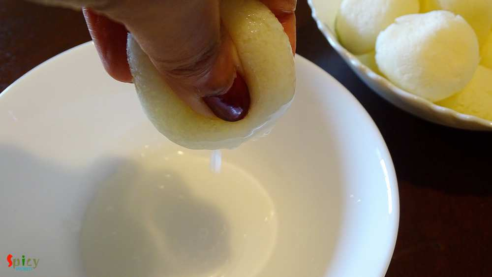
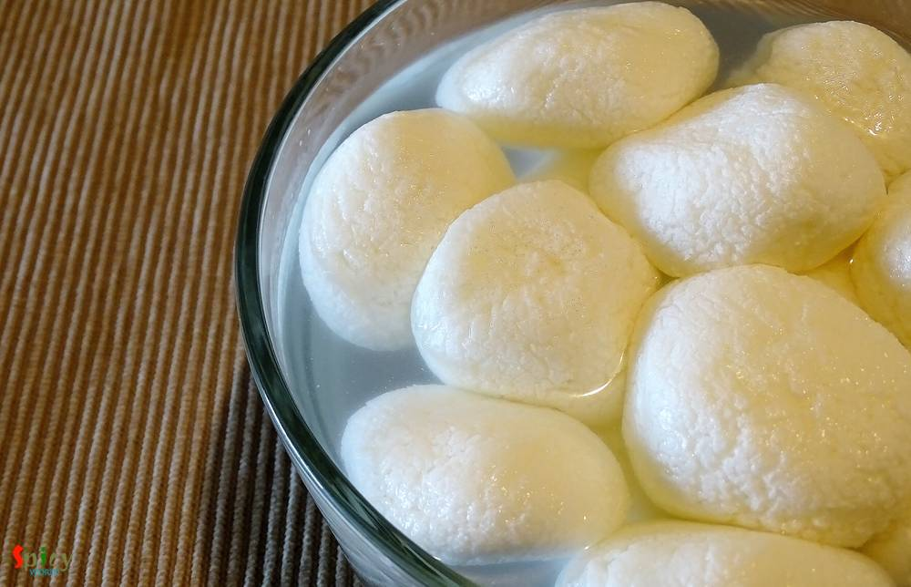
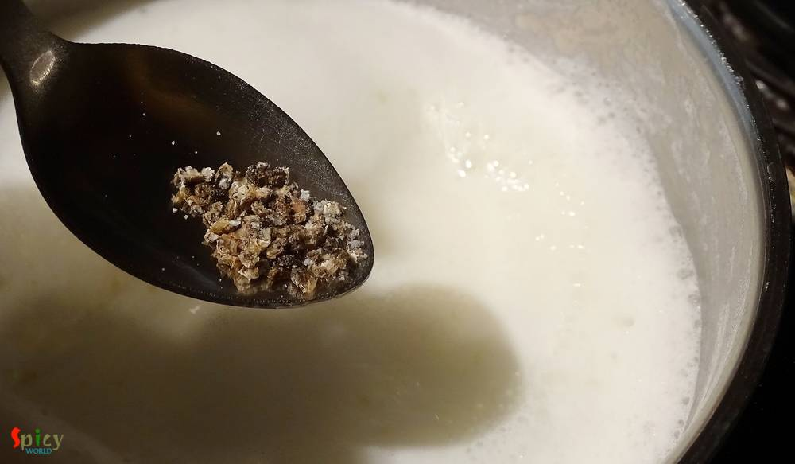
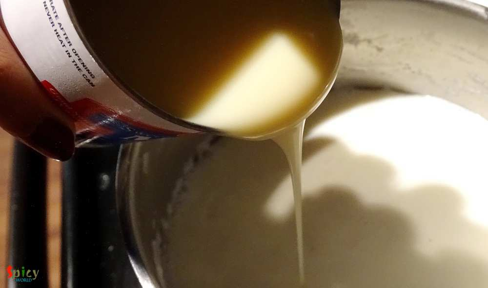
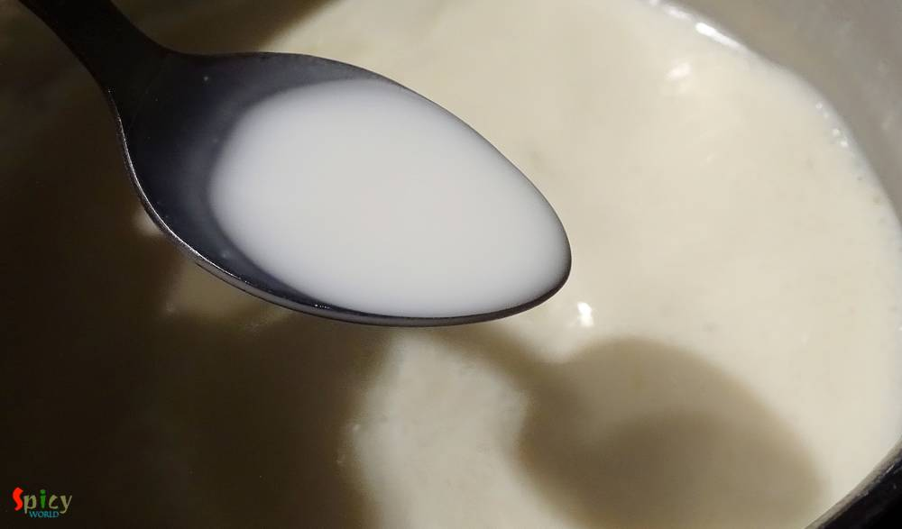
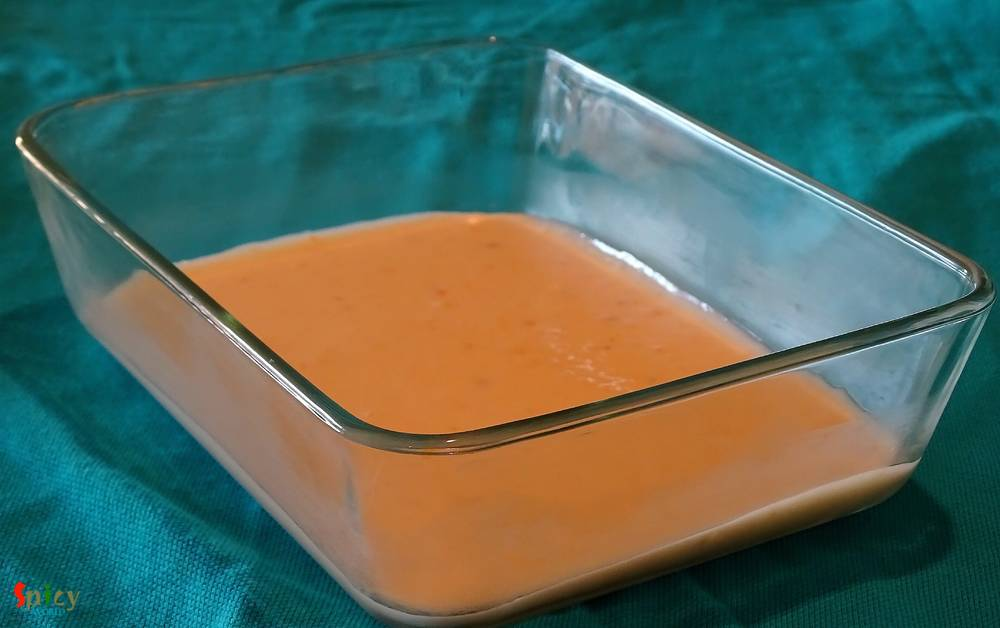
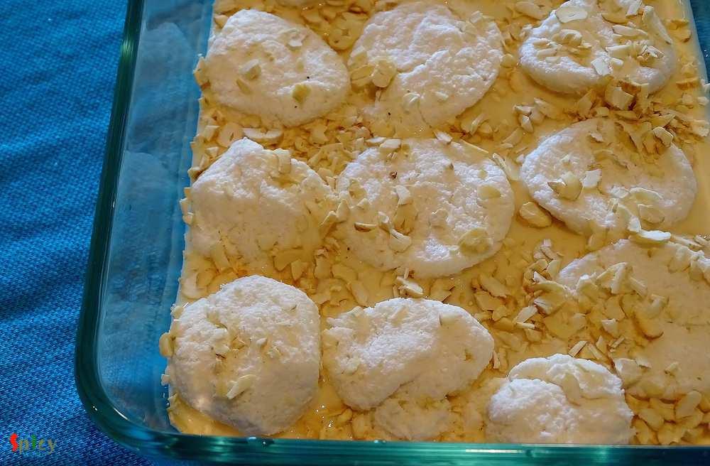
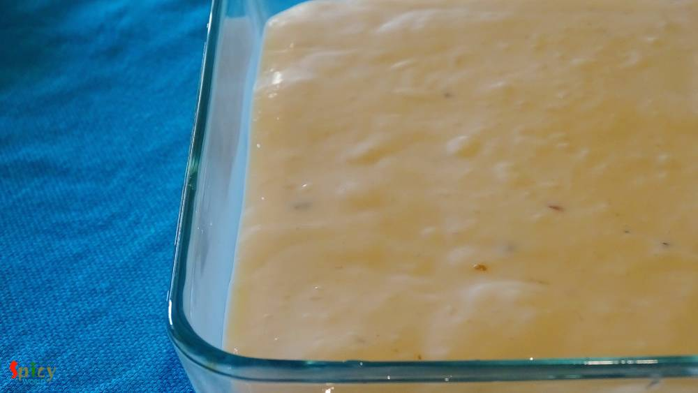
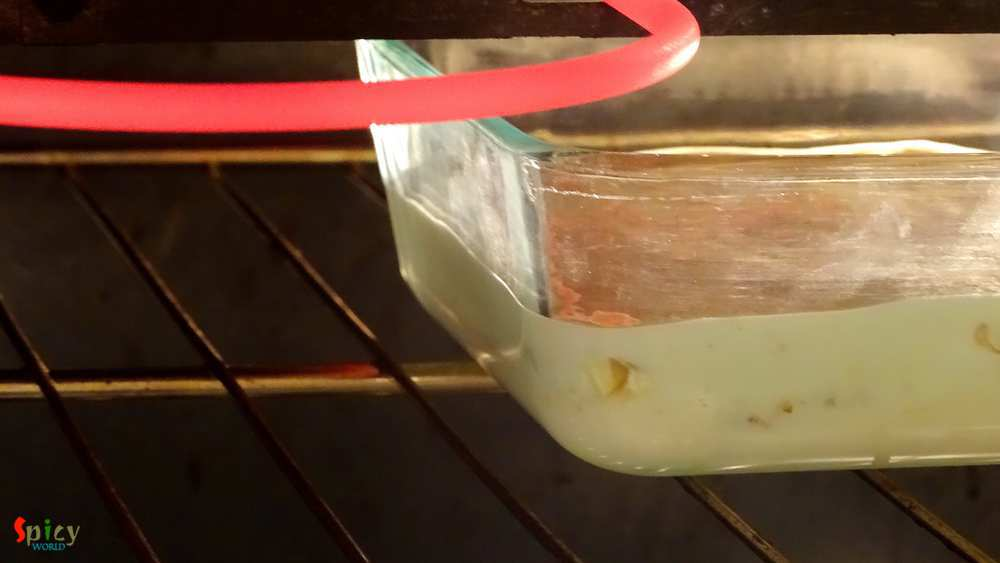
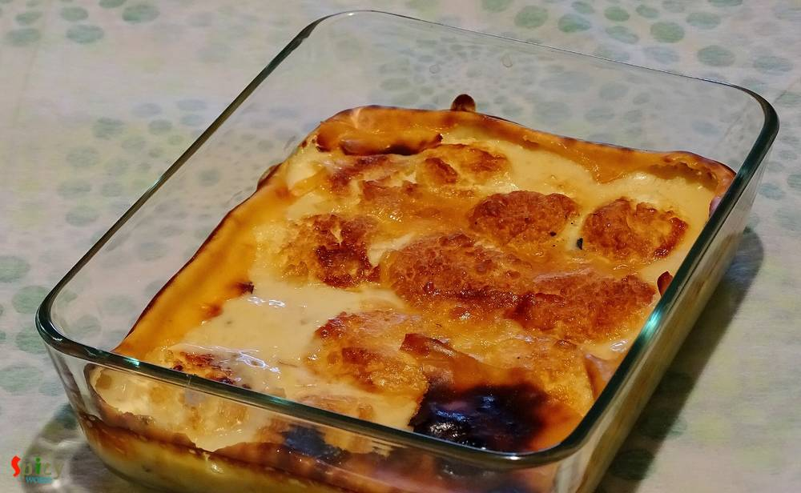

Simple and Easy Recipes
Baked Rosogolla
© 2016 Spicy World, Published on: Nov 24, 2015

'Diwali' is the celebration of light and sound. Its been two years I am away from home (Kolkata). My papa used to buy me lots of crackers a day before diwali, we toast them in sunlight and in the evening of diwali my (maternal) uncle bought me some more crackers for his 'vagni'. Then around 8 pm me and my papa used to decorate our roof with candles and after that we started doing fireworks with our family. Ohh, I almost forgot to tell you about food. My mom used to make various types of sweets at home and we enjoyed them a lot. So, I made 'baked rosogolla' for this diwali, my first attempt and I nailed it. Try this in your kitchen and share some of your diwali story with me.
Spicy World wishes everyone a very Happy DiWaLi ...

Ingredients
- 15 rosogollas.
- 7 cups of milk.
- half tin of condensed milk.
- Pinch of cardamom powder.
- 1 Teaspoon cornstrach.
- 4 Teaspoons of chopped cashews.
- Water.

Steps
Squeeze out all the syrup from every rosogolla with the help of your hand.
Then soak them in cold water for 15 minutes. Squeeze out the water from rosogolla after that and again repeat the process.
Boil the milk in a heavy bottom pot.
Reduce it to half.
Add cardamom powder in the reduced milk.
Then add condensed milk. Check the sweetness. If you need more sweetness, you can add more.
Dilute the cornstrach in some cold milk and add in the milk. It will help to thicken the milk.
Let it cool down completely.
Then put a layer of that reduced milk in a oven proof bowl.
Arrange the squeeze out rosogollas.
Spread some chopped cashews over them.
Now spread the last layer of reduced milk.
Preheat the oven to 400F for 10 minutes.
Then put the bowl on the upper rack of the oven and bake it for 10-15 minutes.
Let it rest for another 5 minutes and then bring it to room temperature.
I like them warm but you can serve cold also.
Your baked rosogolla is ready ...
Enjoy them on this kind of special occasion ...
")